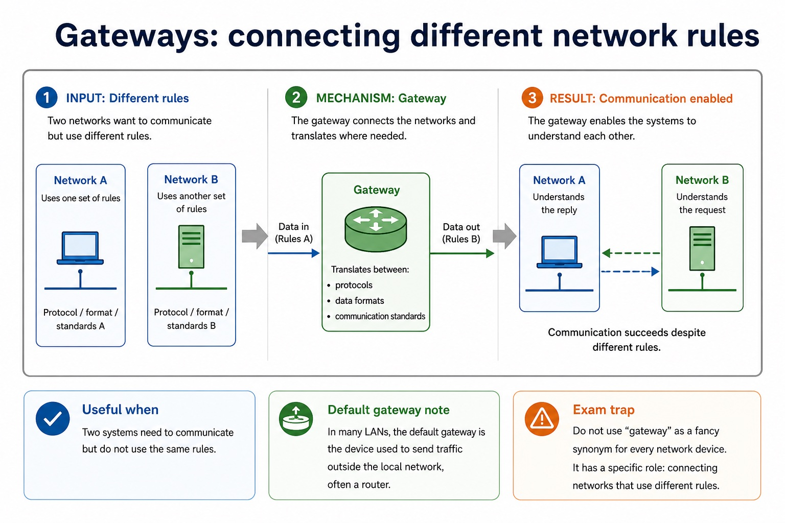

Cambridge AS9618 | Paper 1 | Section 2: Communication
LAN hardware, routers and Ethernet
Flexible-depth lesson
S2.09, S2.10, S2.11 | Learn from the diagrams, test the method, then choose the practice you need.
Choose a Quick, Full or Deep route
Quick route
Use the diagnostic, learning objectives, first worked example and foundation question. Stop once the learner can explain the central distinction accurately.
Full route
Use every knowledge-point material set, the worked method, the terminology check and all questions.
Deep route
Add the prerequisite refresher, ask learners to connect the concept checklist, discuss the labelled extension and complete a transfer question without a model answer.
Part 1 | optional depth
Prerequisite knowledge and quick diagnostic
Recall S2.01 before starting this lesson.
Give one accurate definition or method step before continuing. If it is missing, revisit only that prerequisite.
Open optional prerequisite refresher
A LAN covers a limited area and is normally managed by one organisation; a WAN connects sites across a large area and commonly uses provider infrastructure. Benefits must identify a shared or centrally managed resource and its consequence.
Show understanding of the purpose and benefits of networking devices and the characteristics of LANs and WANs.
Part 2 | knowledge-point material sets
Learn each point through visuals
Follow the map, the three-part explanation and the concrete cue. Open precise wording only after the idea is clear.
Open the concept checklist and choose what to teach
switch
server
NIC/WNIC
WAP
cables
bridge
repeater
router
different networks
forwards packets
IP addresses
routing information
Ethernet
CSMA/CD
Carrier Sense
collision
random backoff
retry
01
S2.09 · comparison
Switch · Server · NIC/WNIC · WAP
Concept map
switchserverNIC/WNICWAPcablesbridgerepeater
See how it works
ContrastLAN hardware includes a switch, server, NIC/WNIC, WAP, cables, bridge and repeater
EvidenceEvery named hardware category is required and must be distinguished by its role
Decisiona combined consumer device does not merge the logical functions
S2.09 diagrams
1 / 4
01
Comparison · 1 of 4
Switches: forwarding inside a LAN
Open text transcript
A switch connects devices on a local area network and forwards frames to the correct device.
Uses: MAC addresses to decide which port should receive the frame.
Why useful: reduces unnecessary traffic compared with sending every frame everywhere.
Exam wording: say "within a LAN" and "MAC address" when the scenario is local device-to-device traffic.
LAN idea
PC A - switch - PC B
The switch is the traffic desk inside the local network. It does not decide the route across the wider internet.
02
Diagram · 2 of 4
Client-server vs peer-to-peer
Open text transcript
Client-server
Peer-to-peer
Centralised management, security, backups and permissions.
Decentralised control; each peer may manage its own resources.
May need dedicated server hardware, software and administration.
Can be cheaper for small networks because no dedicated server is required.
Reliability
Server failure may affect many clients unless redundancy is used.
03
Comparison · 3 of 4
One model has equal peers; the other has dedicated service roles
Open text transcript
Visual explanation
Follow the arrows and identify which devices can provide a resource.
Peer-to-peer: every device can request and provide
The lines show possible direct sharing between peers. They do not define a physical topology: peer-to-peer describes device roles.
No dedicated central server is required.
Each peer can request a file and provide one.
A peer going offline can make its shared resource unavailable.
Client-server: clients request a managed service
04
Comparison · 4 of 4
5-minute mini assessment
Open text transcript
Monthly checkpoint
Use this as a short checkpoint before moving to named protocols. Expand the answer key after attempting.
Explain why DNS is needed when a user enters a URL.
State one difference between an IP address and a MAC address.
Identify the domain name in https://store.example.com/products/item7 .
1: DNS resolves the domain name in the URL to an IP address so packets can be routed to the server.
2: IP is a logical network address that can change; MAC is a hardware/interface address used locally.
3: store.example.com .
Open precise syllabus wording
Describe LAN hardware: switch, server, NIC, WNIC, WAP, cables, bridge and repeater.
Every named hardware category is required and must be distinguished by its role; a combined consumer device does not merge the logical functions.
02
S2.10 · concept
Router · Different networks · Forwards packets · IP addresses
Concept map
routerdifferent networksforwards packetsIP addressesrouting information
See how it works
MeaningA router connects different networks and forwards packets using destination IP addresses and routing information
Mechanismproviding WiFi is not the defining role
ConsequenceThe router then forwards the packet from the school LAN toward another network
S2.10 diagrams
1 / 4
01
Comparison · 1 of 4
Routers: forwarding between networks
Open text transcript
A router connects different networks and forwards packets towards their destination.
Uses: IP addresses and routing information to choose a path.
Common role: connects a LAN to the internet or to another network.
Careful wording: a router does not simply "make WiFi". Some home boxes combine router and access point functions, but the jobs are distinct.
Between networks
LAN - router - internet / WAN
Inside the LAN, MAC-address forwarding matters. Between networks, IP-address routing matters.
02
Diagram · 2 of 4
IP address vs MAC address
Open text transcript
IP and MAC addresses work together at different layers; they are not an either-or choice.
The destination IP identifies the endpoint for end-to-end packet delivery.
The destination MAC identifies the receiving interface for one local-link frame.
On a routed path, the frame normally targets the next-hop router MAC while the packet retains the remote destination IP.
03
Comparison · 3 of 4
Routing and arrival
Open text transcript
Router decision Routers forward packets based on destination address and routing information.
Different paths Packets from the same message may take different routes through the network.
Out of order Packets may arrive in a different order because routes have different delays.
Error handling Checksum/error checks can detect corruption; missing/corrupt packets may be requested again.
04
Comparison · 4 of 4
Compare by job and boundary
Open text transcript
A switch forwards frames inside a LAN using MAC addresses.
A router forwards packets between networks using IP addresses and a routing table.
A wireless access point connects wireless devices to a network.
A gateway connects systems or networks that use different protocols or formats and may perform translation.
Open precise syllabus wording
Describe the role and function of a router in a network.
A router connects different networks and forwards packets using destination IP addresses and routing information; providing WiFi is not the defining role.
Meaningcollision detection occurs after transmission begins
MechanismA collision causes stop/jam, random backoff, sensing and retry
ConsequenceAfter a collision, stations stop transmitting, send/recognise a jam signal, wait for different random backoff periods and retry
Open precise syllabus wording
Show understanding of Ethernet and how collisions are detected and handled using CSMA/CD.
Carrier sensing occurs before transmission; collision detection occurs after transmission begins. A collision causes stop/jam, random backoff, sensing and retry.
Supporting diagram library
1 / 5
01
Diagram · 1 of 5
From a URL to a packet on the local link
Open text transcript
DNS resolves a domain name to an IP address; it does not return a MAC address.
The network-layer packet header contains the destination IP address of the endpoint.
For one local hop, a link-layer frame contains the IP packet and a destination MAC address.
The destination IP and destination MAC belong to different encapsulation headers.
02
Diagram · 2 of 5
DNS: name to IP address
Open text transcript
1. URL entered The user enters a URL containing a domain name.
2. DNS lookup The device asks a DNS server to resolve the domain name.
3. IP returned The DNS server returns the IP address for that domain name.
4. Packets sent Packets can now be addressed and routed to the web server.
Common error
DNS failure may stop a domain name working even if the server is still reachable by IP address.
03
Diagram · 3 of 5
URL components
Open text transcript
https://www.example.org/resources/page.html
Protocol / scheme https tells the browser which communication protocol to use.
Domain name www.example.org is resolved by DNS to an IP address.
Path /resources/page.html identifies the resource on the server.
04
Diagram · 4 of 5
Gateways: connecting different network rules

Open text transcript
A gateway connects networks that may use different protocols, data formats or communication standards, translating where needed.
Useful when: two systems need to communicate but do not use the same rules.
Default gateway note: in many LANs, the default gateway is the device used to send traffic outside the local network, often a router.
Common error: do not use "gateway" as a general term for every network device.
05
Diagram · 5 of 5
Wireless access points: joining wireless devices
Open text transcript
Wireless access point
A wireless access point allows wireless devices to connect to a network using radio waves, often linking them to a wired LAN.
Good exam phrase: provides wireless access to a network.
Not enough: "it gives internet". Internet access may also require a router and wider network connection.
Security link: access points can use authentication and encryption, but this lesson focuses on their network role.
Apply the idea
Worked method
01Trace a school request
02Two stations sense an idle cable
036 Mbit/s video on 4 Mbit/s link
04Separate infrastructure from service
05Locate one resource on a school web server
06A laptop sends a frame through its wireless interface to an access point.
Open precise terminology and exam facts
Every named hardware category is required and must be distinguished by its role; a combined consumer device does not merge the logical functions.
A router connects different networks and forwards packets using destination IP addresses and routing information; providing WiFi is not the defining role.
Carrier sensing occurs before transmission; collision detection occurs after transmission begins. A collision causes stop/jam, random backoff, sensing and retry.
LAN hardware includes a switch, server, NIC/WNIC, WAP, cables, bridge and repeater. A server provides network services. A NIC/WNIC connects a device by cable or wirelessly; a WAP connects wireless devices to a wired LAN. A switch forwards frames within a LAN, a bridge connects LAN segments, a repeater regenerates a weakened signal, and cables carry signals.
A router connects different networks and forwards packets using destination IP addresses and stored routing information. It is not a replacement name for a switch: the two devices make forwarding decisions at different scopes.
CSMA/CD means Carrier Sense Multiple Access with Collision Detection. A station listens to the shared medium; if idle it transmits, while continuing to detect a collision.
After a collision, stations stop transmitting, send/recognise a jam signal, wait for different random backoff periods and retry. The random delay reduces the chance of another simultaneous attempt.
A URL locates a WWW resource: DNS resolves the domain to an IP address, while the remaining URL components identify the required resource.
Bit streaming delivers media progressively so playback can begin before the whole file arrives. Real-time streaming carries a live event with minimal delay; on-demand streaming sends stored content selected by the user.
Bit rate is the number of bits transmitted each second. Available broadband speed must normally exceed the media bit rate and absorb variation; otherwise the player buffers, lowers quality or pauses. A buffer stores arriving data temporarily.
The internet is the global network infrastructure that interconnects networks and carries many services. The World Wide Web is one service that uses the internet to provide linked resources accessed with web protocols and browsers.
Internet hardware includes routers and transmission links that forward data between networks. Web servers store or generate web resources, while clients request those resources; the WWW is therefore not a synonym for all internet services.
Beyond syllabus / 延伸知识（不要求背诵）
real networks organise communication in layers so that hardware, addressing and application protocols can change independently.
Part 3 | select by learner need
Practice by question type
explainexplainfoundation8 marks
Question 1. Explain the roles of a NIC, wireless access point, switch and router in a school LAN connected to the internet. Describe how CSMA/CD handles two devices attempting to transmit on a shared Ethernet medium. A video has a bit rate of 8 Mbit/s. Explain why a connection advertised as 8 Mbit/s may still pause during playback. Explain why the internet and the World Wide Web are not the same. Describe the hardware path used when a home computer accesses a remote server. Compare IPv4 with IPv6, then explain how a URL and DNS are used to request a web resource.
Show answer and marking guidance
Answer: NIC role; access-point role; switch role; router role; each device listens/senses the carrier before transmitting; transmits when the medium is idle; detects a collision and stops transmission; waits a random/backoff time before retrying; video requires about 8 million bits each second; actual available speed may be below advertised/maximum speed; other traffic, overhead or variation reduces throughput; buffer empties when data arrives more slowly than playback consumes it; internet infrastructure; WWW service; example or hardware path distinguishes them; end-device interface; LAN device; router role; modem/access-link role; IPv4 uses 32-bit addresses; IPv6 uses 128-bit addresses / provides a much larger address space; URL identifies a WWW resource and includes a domain plus resource path; DNS resolves the domain name to an IP address; IP address is used to route packets while the path identifies the requested resource
Marking guidance: Do not describe every named device as routing packets between networks. Do not accept collision avoidance: CSMA/CD detects and responds to a collision after transmission has begun. Do not accept 'bandwidth is slow' without comparing arrival rate with the stream bit rate. Do not define the internet as a collection of webpages. Do not use modem, router and switch as interchangeable terms. Do not accept that a private IP address guarantees security or that DNS converts the entire URL/stores the website.
Common error: For the command word explain, perform that exact action; do not replace it with an unrelated fact.
applyrecallapplication2 marks
Question 2. What is sensed before Ethernet transmission?
Show answer and marking guidance
Answer: Whether the shared carrier/medium is idle.
Marking guidance: Award one mark for each distinct, technically accurate point or method step.
Common error: Do not repeat the same point in different words; each mark needs a separate idea or method step.
applyrecalltransfer2 marks
Question 3. What does the router do at the LAN boundary?
Show answer and marking guidance
Answer: It forwards packets between the LAN and other networks.
Marking guidance: Award one mark for each distinct, technically accurate point or method step.
Common error: Do not copy the worked example unchanged; transfer the method and check it against the new context.
Related past-paper indexes
Reference
Marks
Command word
Question type
9618/12/W/25 Q5(a)
2
describe
explain
9618/12/S/24 Q3(i)
2
describe
explain
9618/13/S/24 Q6(i)
2
define
recall
9618/11/W/23 Q2(a)
3
describe
explain
Index only: Cambridge question and mark-scheme wording is not reproduced on this public course page.
Part 4 | close when ready
Summary and exam reminders
Summary
Define lan hardware, routers and ethernet with the exact technical vocabulary expected by the syllabus.
Use the lesson method on a fresh context and show the intermediate decision, representation or calculation.
Match the shape of the answer to the command word and the available marks.
Check the final answer against the scenario instead of repeating a memorised sentence.
Common error to correct
Students often confuse bandwidth with speed in every sense. Correction: bandwidth is capacity; latency and congestion also affect perceived performance.
Exam technique
Follow the command word: state gives a fact; explain links a cause to a consequence; compare covers both sides.
Match the number of independent points or method steps to the available marks.
For lan hardware, routers and ethernet, use the exact technical term before applying it to the scenario.